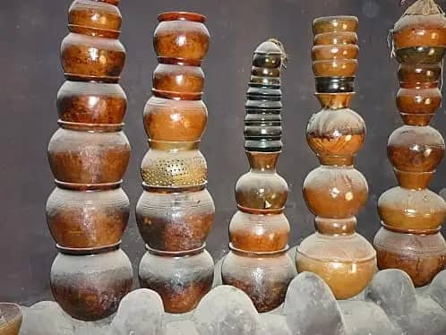
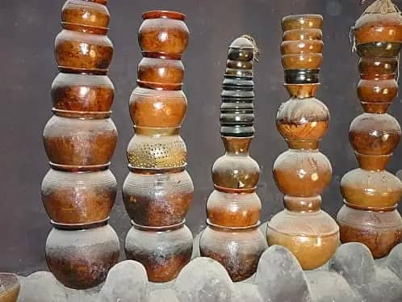

À propos du musée
Situé au cœur de Bobo-Dioulasso, le Musée Sogossira Sanou est un véritable centre de préservation de la mémoire culturelle des peuples de l’ouest du Burkina Faso. Ce musée abrite une importante collection d’objets traditionnels, de masques, de statues, d'instruments de musique et d'œuvres artisanales.
Il tire son nom de Sogossira Sanou, figure intellectuelle importante et défenseur de la culture bobo. Le musée est aussi un espace vivant où se déroulent régulièrement des expositions, conférences et activités éducatives pour valoriser le patrimoine culturel local.
La visite du musée permet de découvrir les rites, les croyances et les modes de vie ancestraux des populations de Bobo-Dioulasso et de ses environs.
Galerie du musée
 


Planifiez votre visite
Le musée est situé non loin du centre-ville. Il est ouvert au public tous les jours sauf le lundi, de 9h à 17h. Des visites guidées sont proposées pour permettre une meilleure compréhension des œuvres exposées.
Des guides expérimentés vous accompagneront pour une plongée enrichissante dans l’histoire et les cultures des peuples de l’ouest du Burkina Faso.